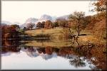

The lake District
Travel Scotland! goes south to England and the Lake District. The tour leaves departs from London, taking an overnight train to Windemere, your gateway to the Lake District. Take some time to peruse the local shops or hike the mountains, following in the footsteps of William Wordsworth. With a week in the Lake District, you'll have plenty of time to discover all of its charms and wonders.
From the Lake District, we go to York for two fun-filled days. Tour the awesome York Minster, one of the most beautiful cathedrals in Europe. York is also home to underground ruins of one of the earliest Roman settlements in Britain.
The tour concludes with two days of sight-seeing and fun in London.